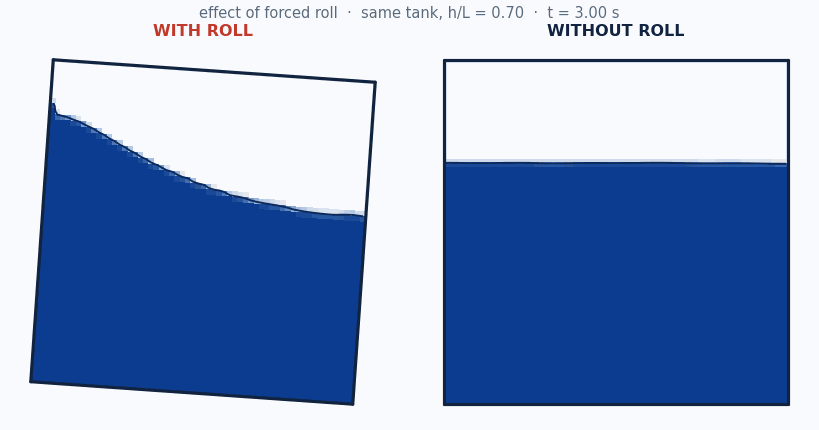
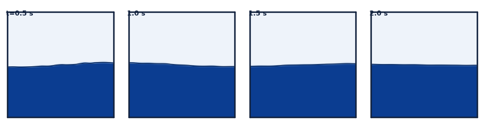
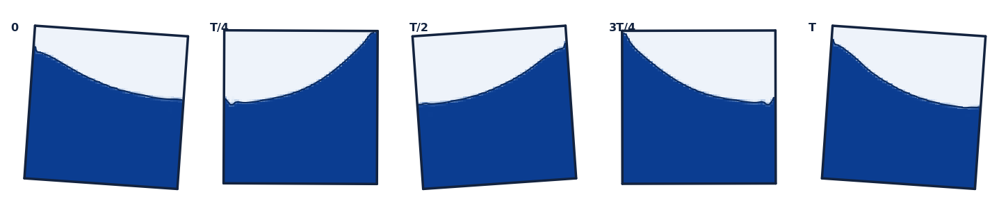

CFD study · OpenFOAM · free-surface (VOF) + forced motion
Ballast-tank sloshing — the 2D CFD study
From analytical natural periods to CFD-benchmarked resonance: a partially filled tank has a
gravity-driven sloshing mode; tune it near a vessel's roll period and it acts as a passive tuned-liquid
(anti-roll) damper. This page showcases the 2D VOF CFD that pins the analytical master curve to measured
data and shows how forced roll excites the resonance.
VERIFIED · real OpenFOAM v2312
SolverinterFoam (VOF), OpenFOAM ESI v2312
CFD cases73 (2D)
Nat-freq error≤0.30% vs theory
Resonanceat natural period

The effect of forced roll — same tank, same 70% fill. LEFT: with roll, the free surface piles up and sloshes wall-to-wall. RIGHT: without roll, it stays flat and calm. Live 2D VOF (OpenFOAM v2312) free-surface fields.
1 · Natural period — CFD vs analytical (without forced roll)
A free-decay run rings down a small first-mode perturbation in a static rectangular tank; the FFT
natural frequency, non-dimensionalised as Ω₁ = ω₁√(L/g), is compared to the
analytical linear-potential value √(π·tanh(πh/L)). Four fills bracket the curve.
— analytical ◯ measured CFD (free-decay, no forced roll)

Free-surface (VOF) field of the free-decay first mode — the standing wave rings down in the static tank (water navy, air pale, interface at α=0.5). Real OpenFOAM output.
Fill h/L
Ω₁ measured (CFD)
Ω₁ analytical
Error
15%
1.1779
1.1746
0.28%
30%
1.5164
1.5210
0.30%
50%
1.6974
1.6974
0.00%
70%
1.7508
1.7508
0.00%
Result. The 2D VOF pipeline reproduces the analytical first-mode frequency to
within 0.30% across the fill range — the measured points sit on the rectangular master curve. See the
CFD-vs-literature chart (which shape was validated) in
the interactive explorer.
Grid & timestep convergence — is the ≤0.30% earned?
The literature (and our own adversarial review) is clear that a sub-percent match must be earned by a
convergence study, not asserted. This refines the exact case with the known ~0.30% error (L=1 m tank,
h/L = 0.30 — which lands on a cell face at every mesh, so the analytical target is identical) across
five grids and three timesteps.
Free-decay frequency error vs mesh — it falls only slowly toward a ~0.29% floor: the residual is physical (finite-amplitude), not mesh.
Mesh
Cells
Freq (Hz)
|error|
Runtime (s)
Predicted (s)
40×40
1,600
0.75558
0.326%
149
117
60×60
3,600
0.75565
0.317%
241
264
80×80
6,400
0.75570
0.310%
342
470
120×120
14,400
0.75576
0.302%
684
1,058
160×160
25,600
0.75581
0.296%
1,208
1,881
The last two columns check the run-time estimator: its rate is calibrated at
~16-wide contention, so it reads as an upper bound here — this batch ran 7-wide and tapering, so actual came in below
predicted, exactly as the contention model says (fewer concurrent → faster per case).
Timestep sweep (fixed 80×80 mesh)
Δt (s)
Timesteps
Freq (Hz)
|error|
0.004
3,000
0.75570
0.310%
0.002
6,000
0.75570
0.310%
0.001
12,000
0.75572
0.308%
Richardson extrapolation (ratio-2 triple). Observed order of accuracy p = 0.191, grid-converged frequency 0.756556 Hz vs analytical 0.758054 Hz, fine-grid GCI = 0.1239%. The extrapolated value stays ~0.2% below the linear-analytical target, and p is far below the formal ~2 — so the study is not in the asymptotic regime and the GCI is indicative only (a non-mesh term dominates the error).
Verdict. Numerically sound: the frequency is grid- and timestep-converged — mesh error falls monotonically to a ~0.29% plateau (only the finest 25,600-cell mesh reaches ≤0.30%) and the timestep sweep is flat over a 4× refinement. But the residual is predominantly PHYSICAL, not discretization: Richardson extrapolation gives 0.7566 Hz, still ~0.20% below the linear-analytical 0.758 Hz — an irreducible finite-amplitude offset (0.02 m perturbation) from the linear tanh dispersion. The low observed order (p ≈ 0.19, far below the formal ~2) confirms a non-mesh term dominates the error budget, so the GCI (0.12%) is indicative only. Bottom line: the ~0.3% agreement is a finite-amplitude modeling difference, not numerical error that vanishes with refinement.
2 · Forced-roll resonance — with vs without
Without forced roll, the free-decay run gives the intrinsic natural period. With forced roll,
driving the tank (4.0° roll) at a range of roll periods and measuring the steady wall run-up traces a resonance
curve that peaks at that same natural period — roll excites the mode the free-decay rings down. The dashed
grey curve is the linear damped-oscillator amplification (Faltinsen & Timokha 2009; Abramson 1966).

One roll cycle at resonance (0, T/4, T/2, 3T/4, T), h/L=0.70 — the tank tilts and the free surface sweeps wall-to-wall. Real OpenFOAM (VOF) output.
● fill h/L = 0.3 ● fill h/L = 0.5 ● fill h/L = 0.7 – – damped-oscillator model (ζ = 0.170)
Fill h/L
Natural T₁ analytical (s)
Natural T₁ free-decay CFD (s)
Resonant T forced CFD (s)
resonant / natural
30%
1.251
1.247
1.251
1.00
50%
1.121
1.117
1.121
1.00
70%
1.087
1.089
1.087
1.00
Confidence. At every fill the forced-roll resonant period lands on the natural period
(ratio ≈ 1.00). Roll excitation and free decay agree on the same mode — the methodology is self-consistent.
At 4° roll the resonant peak sits on the linear T₁ (section 2). Nonlinear theory predicts this only
holds at small amplitude: the fundamental sloshing mode is a soft spring whose resonant frequency drifts with
amplitude. This sweep drives each fill at 2–8° over a frequency grid and locates resonance by the
quadrature (damping) coefficient peak — the phase-based locator (Bäuerlein & Avila 2021);
the wall run-up saturates near resonance and is not a reliable locator, so it is reported separately.
Result. Both fills show soft-spring detuning: the resonant period lengthens
(frequency drops) as roll amplitude grows, reaching roughly 7–13% below T₁ at 8°. The
h/L = 0.70 case (above the h/L ≈ 0.34 critical depth) is the clear soft spring; h/L = 0.30 sits right at
the critical depth and also detunes downward under strong shallow-water nonlinearity rather than showing the clean
hardening small-amplitude theory would predict. So “resonance at T₁” is the small-amplitude
limit only — at operational roll angles the tank detunes, and anti-roll tuning must use the
amplitude-annotated value. (The grid is coarse (Δr = 0.05) and the 8°/70% peak reaches the r = 1.15
edge, so a finer, wider grid is the natural refinement.)
The one recognised external benchmark with published experimental data (not our own analytical): the SPHERIC
Test 10 lateral-impact case (Delorme et al. 2009; benchmark values Botia-Vera et al. 2010). A shallow-filled
tank (L=0.9 m, h=0.093 m ≈ 18% fill)
in 4.0° forced roll at T=1.6298 s (0.85·T₀) throws an
overturning wave that slams the side wall at the still-water line; the first-impact pressure at Sensor 1
(y=0.093 m) is the validated quantity. A moving-wall patchProbes tap tracks the
rotating wall.
Quantity
Value
Note
CFD first-impact peak (Sensor 1)
4,688 Pa
single 2D interFoam realisation
Experiment, first-peak (water, 1X)
3,710 ± 732 Pa
mean ± SD, 100 runs (CoV ~19.7%)
Experimental 2σ band
2,246–5,174 Pa
CFD / mean = 1.264
Within the experimental scatter. The CFD peak sits at 1.264× the experimental mean (upper part of the 2σ band) —
consistent with the documented tendency of violent-impact CFD/SPH to over-predict pressure maxima. A single
deterministic 2D CFD run is one draw from a strongly stochastic impact distribution (experimental CoV ~20%), so
agreement is judged as landing within the experimental scatter, not as an exact number; 2D also omits the experiment's
out-of-plane-thickness dependence and air entrapment. This validates the forced-roll VOF impact path against measured
data at shallow fill.
Sources: Botia-Vera, Souto-Iglesias, Bulian & Lobovsky (2010), Table II (100 runs); Delorme et al. (2009), Ocean Eng. 36(2).
4 · Literature survey — support & contrast
The literature supports our 2D VOF free-decay + forced-roll approach for the FREQUENCY, TUNING and DAMPING questions it is scoped to answer, but with more caveats than the original draft implied. Independent VOF-CFD (Yang & West 2016) and shaker/sway experiments (Bäuerlein & Avila 2021; Chen & Xue 2018; Faltinsen/Rognebakke) confirm that linear tanh dispersion predicts first-mode natural frequencies well at intermediate-to-deep fills and that free-decay-then-FFT is an accepted extraction method, so a sub-percent free-decay match is credible - but a specific '<0.3%' figure must be EARNED by a Courant/mesh-convergence study, not asserted a priori. Bäuerlein & Avila validate the 90-degree phase-lag/quadrature criterion as a rigorous resonance locator, and the anti-roll-tank literature (Carette 2023; Moaleji & Greig 2007) supports reducing a partially filled tank to a lightly-damped tuned SDOF. Confidence is genuinely PARTIAL for design loads and combined-motion excitation: above the ~0.34 critical depth the resonance detunes off linear T1 onto a soft-spring branch (confirmed by Bäuerlein & Avila 2024), 2D omits swirl and the effective-gravity-angle (sway+roll) forcing, and impact-pressure magnitude is mesh/air-compressibility sensitive.
Supports our approach
NASA's first-principles VOF CFD is demonstrated to accurately predict slosh natural frequency and to capture the very low (well below 1% critical) smooth-wall damping (damping RMS error <4.8%, max <8.5% vs experiment), and the paper explicitly states there is NO analytical solution for slosh damping - which is exactly why a CFD quadrature/decay extraction is necessary. — Yang, H.Q. & West, J. (2016), 'Validation of High-Resolution CFD Method for Slosh Damping Extraction of Baffled Tanks', NASA MSFC/AIAA, NTRS 20160009699
In a horizontally forced (sway) rectangular tank the response lags the forcing by 90 degrees AT the nonlinear response maximum regardless of wave regime, validating use of the quadrature/phase-lag peak as a rigorous resonance locator rather than an amplitude proxy. — Bäuerlein, B. & Avila, K. (2021), 'Phase lag predicts nonlinear response maxima in liquid-sloshing experiments', J. Fluid Mech. 925, A22 (arXiv:2011.02726)
Linear potential theory predicts rectangular first-mode frequencies that agree well with commercial-CFD sloshing-elevation time histories, with the important qualifier that linear theory under-predicts AMPLITUDE (not frequency) near resonance - exactly the gap our VOF CFD fills for resonant run-up. — Nuclear Engineering & Technology (2019), 'Simple analytical method for predicting the sloshing motion in a rectangular pool', ScienceDirect S1738573319301767
An experiment-validated OpenFOAM interFoam VOF sloshing study across multiple fill levels establishes our toolchain (interFoam, multi-fill sweep) as an accepted, validated sloshing solver reproducing frequency, amplitude and resonance trends. — Chen, Y. & Xue, M.-A. (2018), 'Numerical Simulation of Liquid Sloshing with Different Filling Levels Using OpenFOAM and Experimental Validation', Water 10(12):1752, DOI 10.3390/w10121752
The Delorme et al. 2009 canonical forced-roll benchmark (2D tank 900x508x62 mm, SHALLOW fill 93 mm i.e. h/L~0.10, roll amplitude 4 deg, SPH+experiment with many repeats for pressure statistics; SPHERIC Test 10) is the reference geometry and protocol for forced-roll-brackets-T1 validation, and it notably finds peak impact pressures at a frequency BELOW the first natural frequency - a built-in detuning warning. — Delorme, L., Colagrossi, A., Souto-Iglesias, A., Zamora-Rodríguez, R. & Botía-Vera, E. (2009), 'A set of canonical problems in sloshing, Part I: Pressure field in forced roll', Ocean Engineering 36(2):168-178; SPHERIC Test 10
The Faltinsen/Rognebakke sway-excited rectangular-tank campaign uses the IDENTICAL tanh dispersion f_n=(1/2pi)sqrt[(n pi g/L)tanh(n pi h/L)] we validate against, over fills overlapping our range, giving measured free-surface elevation vs analytic natural periods - direct support for Step 1. — Rognebakke, O.F. & Faltinsen, O.M. (2000/2003), sway-excited rectangular-tank sloshing experiments and multimodal theory, J. Fluid Mech.
The anti-roll-tank literature explicitly frames a partially filled tank as a Tuned Vibration Absorber whose natural frequency is set close to the ship roll natural frequency and whose damping ratio is then optimized - directly supporting our resonance-at-T1 framing and endorsing reduction of the forced-roll CFD to a reportable SDOF (natural frequency + damping ratio), the deliverable ART designers actually use. — Carette, N. (2023), 'A consistent method to design and evaluate the performance of Anti-Roll Tanks for ships', Ship Technology Research 70; Youssef, K.S., Mook, D.T., Nayfeh, A.H. & Ragab, S.A. (2003), J. Vibration and Control 9(7):839-862
Parametric coupling of a passive anti-roll tank to the roll equation confirms the CFD-extractable design levers (frequency tuning, damping, effective mass, CG-relative location) with frequency tuning to the roll period the dominant lever; a well-tuned passive tank delivers roughly 20-25% roll reduction - an order-of-magnitude benchmark for a future coupled ship+tank case. — Abdel Gawad, A.F., Ragab, S.A., Nayfeh, A.H. & Mook, D.T. (2001), 'Roll stabilization by anti-roll passive tanks', Ocean Engineering 28
Caveats & contrasts
A well-defined critical filling depth h/L~=0.34 marks a hard-to-soft-spring transition: ABOVE it (which includes our best-fill h/L=0.70) the forced response follows a soft-spring Duffing branch and the resonance peak shifts AWAY from the linear T1 as roll amplitude grows - so our run-up/quadrature peak will detune off T1 at finite amplitude and the roll amplitude used MUST be reported. — Bäuerlein, B. & Avila, K. (2024), 'Different scenarios in sloshing flows near the critical filling depth', J. Fluid Mech. (published April 2024)
In horizontally forced experiments the response-amplitude MAXIMUM does not sit on the linear natural frequency: for the deep tank the peak shifts toward LOWER frequency (softening) with growing hysteresis as forcing rises, and inviscid multimodal (Faltinsen-Timokha) theory OVERESTIMATES amplitude/hysteresis - contradicting any naive 'peak exactly at T1' claim and favoring viscous interFoam over inviscid models. — Bäuerlein, B. & Avila, K. (2021), J. Fluid Mech. 925, A22
VOF against the Delorme canonical forced-roll tank reproduces the TIMING/phasing of pressure peaks well but OVERESTIMATES peak-pressure magnitude - so frequency/phase/run-up are the trustworthy CFD quantities while impact-pressure magnitude in violent roll is mesh/compressibility sensitive and must be caveated. — FLOW-3D / Minerva Dynamics validation of the Souto-Iglesias & Botía-Vera canonical narrow tank
A pitch-excitation study documents a resonant-frequency shift at ~70% fill (our chosen best fill) with a soft-spring characteristic (peak frequency decreasing as amplitude rises) - a direct warning that our 70%-fill forced-roll peak detunes downward from linear T1 unless roll amplitude is kept small or the softening shift is explicitly reported. — MDPI Water 16(11):1551 (2024), 'Experimental Study on the Sloshing of a Rectangular Tank under Pitch Excitations'
The real shipboard driving parameter is the Effective Gravity Angle (combined local lateral/sway/yaw-induced acceleration + roll angle), not roll alone; our forced-ROLL-only CFD captures only the roll-angle term and is therefore a partial/conservative excitation, motivating a combined sway+roll case. — Carette, N. (2023), Ship Technology Research 70
'Best fill' is NOT a universal constant: passive free-surface tanks are tuned by setting liquid depth so the depth-dependent gravity-wave period matches the target roll period, so our 70% result is 'best' only for our specific L and target T1 and should be reported as a tuning curve f1(fill) intersecting the roll frequency, not a standalone optimum. Also, at low tank damping the tank can AMPLIFY roll near frequency ratios ~0.84 and ~1.05 (two-peak detuning split) rather than damp it. — Moaleji, R. & Greig, A.R. (2007), 'On the development of ship anti-roll tanks', Ocean Engineering 34(1):103-121
There is NO closed-form analytical solution for slosh damping (vorticity dissipation), and the Faltinsen-Timokha multimodal nonlinear theory is only valid for finite/intermediate depths (roughly h/L>~0.24-0.27), degrading in shallow water - so our shallow h/L=0.15 case sits near the analytical floor and damping must come from CFD/experiment, which is precisely why the CFD quadrature-coefficient peak is the physically necessary complement. — Faltinsen, O.M. & Timokha, A.N. (2009), 'Sloshing', Cambridge Univ. Press; corroborated by Yang & West (2016), which states no analytical damping solution exists
Near resonance 2D is physically insufficient for near-square plan-forms or multi-axis motion: 2D planar standing waves are UNSTABLE to 3D perturbation and bifurcate through planar->square-like->swirling(rotary)->chaotic regimes that are intrinsically 3D, bounding our 2D claim to the planar first mode of an elongated tank. — Faltinsen, O.M., Rognebakke, O.F. & Timokha, A.N. (2003), 'Resonant three-dimensional nonlinear sloshing in a square-base basin', J. Fluid Mech., DOI 10.1017/S0022112003004816
5 · Way forward — further CFD analysis
HIGHRoll-amplitude sweep to map the soft-spring backbone and quantify peak detuning off linear T1 at h/L=0.70 — Multiple sources (Bäuerlein & Avila 2024 near critical depth; MDPI Water 16(11):1551 2024 at 70% fill) predict our best-fill case sits above the ~0.34 critical depth and will detune downward as amplitude grows. Sweeping roll amplitude on a fine frequency grid (~0.95-1.15 T1) maps the amplitude-dependent backbone and turns 'peak at T1' into a defensible, amplitude-annotated statement.
HIGHReduce the forced-roll quadrature response to a reportable SDOF (equivalent linear damping ratio, added moment, m-c-k) and build an f1(fill) tuning curve instead of asserting a single best fill — The ART design literature (Carette 2023; Youssef et al. 2003; Abdel Gawad et al. 2001; Moaleji & Greig 2007) shows 'best fill' is derived from f1(fill)=f_roll via the already-validated tanh dispersion, and the deliverable designers use is an SDOF (natural frequency + damping ratio). This converts our CFD into the exact engineering artifact and correctly frames the 70% result as a tuning-curve intersection.
HIGHCourant/mesh convergence study (free-decay at Co=0.10 and 0.05, ~25-50 cells across the interface band, interface-compression coefficient =1) to CERTIFY any sub-percent frequency match and separate numerical from physical damping — Larsen, Fuhrman & Roenby (2019) show wave-height constancy and phase are Courant- and scheme-dependent; the draft's '<0.3%' claim is only credible AFTER demonstrating Co-convergence of both frequency and decay rate, and any residual probe drift must be shown numerical before attributing it to physical damping. This convergence study is a precondition, not an optional extra.
HIGHDirect validation run against the Delorme / SPHERIC Test 10 canonical forced-roll tank at its ACTUAL shallow fill (900x508x62 mm, 93 mm fill, h/L~0.10, roll 4 deg) — This is the reference 2D forced-roll benchmark with published wall-pressure + prescribed-motion histories and many repeats. CORRECTION to the original plan: it is a SHALLOW-fill case (h/L~0.10), not a 70% fill, so it validates resonance detection and wall run-up at low fill (and reproduces the observed max-pressure-below-T1 behaviour) but does NOT directly validate our h/L=0.70 point - a separate higher-fill benchmark is needed for that.
MEDIUMShallow-fill (h/L~0.15) forced-roll at increasing amplitude to capture bore/hydraulic-jump onset and amplitude-dependent detuning near the analytical floor — Faltinsen & Timokha and shallow-water studies place h/L~0.15 near/below the ~0.24-0.27 validity floor of low-order theory, where linear tanh overestimates the natural frequency and breaking/jumps dominate - the regime where anti-roll tuning must be set by CFD, exposing where our analytical anchor breaks.
MEDIUMCombined sway + roll (Effective Gravity Angle) excitation case to test whether resonance and wall run-up shift versus roll-only forcing — Carette (2023) shows the true driving parameter combines lateral acceleration and roll angle; our roll-only CFD is a partial/conservative drive, so an EGA case checks whether the tuned-damper resonance and run-up change under realistic combined motion.
MEDIUMTank-width / 3D sensitivity study (Delorme Part 2 span sweep; near-square plan-form 3D check for swirl) — Souto-Iglesias et al. Part 2 isolates 2D-vs-3D effects on pressure statistics, and Faltinsen-Rognebakke-Timokha (2003) show planar 2D waves are unstable to 3D swirl near resonance for near-square tanks - this quantifies/justifies the 2D idealization for an elongated ballast tank and bounds where 3D is mandatory.
LOWDamping/baffle-screen sweep to reproduce the classic low-damping two-peak detuning split (frequency ratios ~0.84 and ~1.05) and show it merging as damping rises — Moaleji & Greig (2007) report adverse resonance peaks straddling the 1:1 tuning point at low damping; reproducing this split and its suppression is a strong validation target for our forced sweep and demonstrates the damping-limited, bounded amplification of the tuned device.
LOWImpact/roof-pressure time histories vs amplitude near T1 at partial/low fill, with compressible-air (and later hydroelastic/3D) treatment — The roof-impact study (peak just above f1) shows peak wall/roof pressures are nonlinear and cluster near f1, while 2D/3D comparison and LNG studies (Bunnik & Huijsmans 2007) show single-phase 2D mispredicts impact loads without air compressibility/3D - this is the outer-tier design-load deliverable, explicitly beyond validated 2D tuning.
6 · Compute & runtime — machine effectiveness
What a 2D interFoam sloshing case costs on this box (dev-secondary (ace-linux-2), 32 cores,
interFoam (VOF), OpenFOAM ESI v2312 — single-threaded per case), so future compute can be predicted. The mesh-normalised cost (µs of wall per
cell·timestep) is the machine invariant. Its intrinsic value is ~12–17µs across classes;
the higher per-class figures in the table below are the same work inflated ~1.5–2.3× by
memory-bandwidth contention when 14–16 cases share the box — a batch artifact, not a physics cost
curve. That contention is the dominant compute-planning lever.
Scoping a new run? Use the interactive run-time estimator →
to read the anticipated wait for a proposed mesh / case count / fan-out.
This box runs 2D interFoam sloshing at an intrinsic ~12-17 us per cell·timestep (static free-decay ~12; a single uncontended moving-mesh forced case ~16-17). The 22-28 us per-class figures are NOT a physics cost curve — they are the same work inflated ~1.5-2.3x by memory-bandwidth contention when 14-16 cases share the 32-core / 31 GB box. Contention, not mesh motion, is the dominant compute-planning lever; a 14-wide fan-out still cut the 48-case backbone from ~5-6 h serial to 34.7 min (~7-10x wall-clock).
Case class
Mesh (cells)
Timesteps
Sim time (s)
Runtime median (s)
s / sim-s
µs / cell·step (contended)
Fan-out
backbone (forced roll, 60x60)
3,600
7,175
7.15
719
100.5
27.847
14×
forced roll (60x60)
3,600
6,810
6.73
547
81.3
22.316
16×
free-decay (80x80)
6,400
6,000
12.0
470
39.2
12.25
16×
Parallel effectiveness. The 48-case backbone batch ran 14× concurrent in 34.7 min — versus ~5–6 h one-at-a-time (a ~7–10× wall-clock speedup, the range reflecting how the serial baseline is estimated), even though each case ran ~2.33× slower under memory-bandwidth contention. Fan-out wins decisively on total throughput.
Runtime model: t_wall ≈ C · N_cells · N_timesteps · f(concurrency) — Wall time scales with the product of mesh cells and solver timesteps; the mesh-normalised cost (µs per cell·timestep) is the machine invariant, and f(concurrency) is the contention factor for parallel fan-out.
Projected compute for the way-forward tiers
Tier
Assumptions
Est. wall-clock
Est. core-hours
Courant / mesh convergence — free-decay 160×160, Co halved
static-mesh @ ~12 us/cell·ts intrinsic; 25,600 cells × ~12,000 timesteps; ~4 cases fit one fan-out wave
3,600 cells × ~7,000 ts; 2 fan-out waves of 14; +10-20% if impacts cut dt
~20-25 min
~2-5 core-h
3D L-shaped ballast tank — extrude ~60-100 cells in 3rd dim
216k-360k cells × ~7,000 ts, moving mesh; 3D cost/cell an unmeasured ~1.2× extrapolation; single-thread per case
~12-24 h single-thread per case; ~1-2.5 h with ~16-core MPI (UNMEASURED — benchmark first)
~12-24 core-h/case; ~35-70 for a 3-fill set
Caveats: Contention is memory-bandwidth-bound (not compute-bound): 14-16 concurrent interFoam on 32 cores / 31 GB slow each ~2.3x; the 22-28 us/cell·ts figures are batch-specific artifacts, not physics. · No large intrinsic moving-mesh premium: the raw 12→22→28 ordering conflates mesh motion with contention; use ~12-17 us intrinsic for 2D planning. · Adaptive-timestep variance: forced/backbone timesteps vary ±10-20% case-to-case with the free-surface dynamics; runtimes are medians, not guarantees. · 2D→3D is an unmeasured extrapolation (assumed 1.2× 3D cost/cell); the ~1-2.5 h MPI figure must be benchmarked on this host before it is promised. · Fan-out speedup is a ~7-10x range: the serial baseline is 247 min (measured 309 s/case) to 336 min (sim-time-scaled); sub-14 case counts finish in a single wave.
Method & provenance
2D interFoam (VOF) on OpenFOAM ESI v2312. Free-decay: static slip-wall tank, first-mode cosine
perturbation, FFT of the wall free-surface. Forced roll: rigid whole-mesh roll via the ESI solidBody motion
solver, partial fill snapped to a cell face, wall run-up + tank reaction-moment reduced to in-phase / quadrature
coefficients. Engines and validated cases ship in digitalmodel
(solvers/openfoam/validation/sloshing_2d.py, sloshing_sweep.py); the drivers are
scripts/cfd/run_sloshing_benchmark.py, run_sloshing_response_sweep.py and
run_sloshing_backbone.py. Related:
2D tank-sloshing verification ·
master-curve explorer.
References
Yang, H.Q. & West, J. (2016), 'Validation of High-Resolution CFD Method for Slosh Damping Extraction of Baffled Tanks', NASA MSFC/AIAA, NTRS 20160009699 link
Bäuerlein, B. & Avila, K. (2021), 'Phase lag predicts nonlinear response maxima in liquid-sloshing experiments', J. Fluid Mech. 925, A22 (arXiv:2011.02726) link
Bäuerlein, B. & Avila, K. (2024), 'Different scenarios in sloshing flows near the critical filling depth', J. Fluid Mech. link
Chen, Y. & Xue, M.-A. (2018), 'Numerical Simulation of Liquid Sloshing with Different Filling Levels Using OpenFOAM and Experimental Validation', Water 10(12):1752, DOI 10.3390/w10121752 link
Nuclear Engineering & Technology (2019), 'Simple analytical method for predicting the sloshing motion in a rectangular pool', S1738573319301767 link
Faltinsen, O.M. & Timokha, A.N. (2009), 'Sloshing', Cambridge University Press; Faltinsen & Timokha (2002) intermediate-depth multimodal theory link
Delorme, L., Colagrossi, A., Souto-Iglesias, A., Zamora-Rodríguez, R. & Botía-Vera, E. (2009), 'A set of canonical problems in sloshing, Part I: pressure field in forced roll', Ocean Engineering 36(2):168-178; SPHERIC Test 10 (SHALLOW 93 mm fill) link
Souto-Iglesias, A., Botía-Vera, E., Martín, A. & Pérez-Arribas, F. (2011), 'A set of canonical problems in sloshing, Part 2: influence of tank width on impact pressure statistics in regular forced angular motion' link
Rognebakke, O.F. & Faltinsen, O.M. (2000/2003), sway-excited rectangular-tank sloshing experiments and multimodal theory, J. Fluid Mech. ('replicated JMSA 2023' claim from draft is UNVERIFIED) link
Faltinsen, O.M., Rognebakke, O.F. & Timokha, A.N. (2003), 'Resonant three-dimensional nonlinear sloshing in a square-base basin', J. Fluid Mech., DOI 10.1017/S0022112003004816 link
Larsen, B.E., Fuhrman, D.R. & Roenby, J. (2019), 'Performance of interFoam on the simulation of progressive waves', Coastal Engineering (arXiv:1804.01158) link
'On the Efficacy of Turbulence Modelling for Sloshing' (2022), Applied Sciences 12(17):8851 link
Carette, N. (2023), 'A consistent method to design and evaluate the performance of Anti-Roll Tanks for ships', Ship Technology Research 70 link
Moaleji, R. & Greig, A.R. (2007), 'On the development of ship anti-roll tanks', Ocean Engineering 34(1):103-121 link
Youssef, K.S., Mook, D.T., Nayfeh, A.H. & Ragab, S.A. (2003), 'Roll Stabilization by Passive Anti-Roll Tanks Using an Improved Model of the Tank-Liquid Motion', J. Vibration and Control 9(7):839-862 link
MDPI Water 16(11):1551 (2024), 'Experimental Study on the Sloshing of a Rectangular Tank under Pitch Excitations' link
'Experimental study on sloshing impact load in elastic tank with low/partial filling under rolling coupled pitching', Int. J. Naval Arch. & Ocean Eng., S2092-6782(19)30044-5 link
Verhagen, J.H.G. & van Wijngaarden, L. (1965), 'Non-linear oscillations of fluid in a container', J. Fluid Mech. 22; as summarized in J. Fluids & Structures 2021, S0889-9746(21)00105-5 and JMSE 2022, 10(11):1792 link
'Comparison of Sloshing Pressures in 2D and 3D Tanks' (2013), Int. J. Ocean Syst. Eng. link
Bunnik, T. & Huijsmans, R. (2007), 'Large-scale LNG sloshing model tests', ISOPE; ComFLOW-2 project link
Kim, S.-Y., Kim, K.-H., Kim, Y. et al. (2012), 'Comparative study on model-scale sloshing tests', J. Marine Science and Technology 17 link
FLOW-3D / Minerva Dynamics validation of the Souto-Iglesias & Botía-Vera canonical narrow sloshing tank link
Godderidge, B., Turnock, S.R., Tan, M. & Earl, C. (2009/2012), 'A rapid method for the simulation of sloshing using a mathematical model based on the pendulum equation', Computers & Fluids link
Faltinsen & Timokha (2009), Sloshing, Cambridge University Press
Abramson (1966), The Dynamic Behavior of Liquids in Moving Containers, NASA SP-106
Carette (2023), Ship Technology Research 70(2), DOI 10.1080/09377255.2022.2117496 — anti-roll tanks
Appendix · CFD input files — how the roll & analysis are set up
The cases are generated by the drivers (no hand-editing); these are the load-bearing OpenFOAM dictionary
excerpts. The roll is a prescribed whole-mesh rigid rotation about the tank floor centre; the
analysis is a near-wall free-surface probe (run-up) plus a wall-force integration reduced to the roll
moment. Verified excerpts from a forced-roll case (h/L = 0.70):
constant/dynamicMeshDict
// Prescribed roll: whole-mesh rigid rotation (ESI solidBody)dynamicFvMesh dynamicMotionSolverFvMesh;
motionSolver solidBody;
solidBodyMotionFunction oscillatingRotatingMotion;
oscillatingRotatingMotionCoeffs
{
origin (0.45 0 0); // roll axis = tank floor centre
omega 5.779; // rad/s (T1 = 1.087 s at h/L = 0.70)
amplitude (0 0 4); // degrees — 4 deg roll about z
}
constant/transportProperties
// Two-phase VOF: water & airphases (water air);
water
{ transportModel Newtonian; nu 1e-06; rho 1000; }
air
{ transportModel Newtonian; nu 1.48e-05; rho 1; }
sigma 0.07; // N/m surface tension
system/controlDict (solver + analysis function objects)
application interFoam; // 2-phase VOF free-surface solver
functions
{
// wall run-up — the resonance metric
interfaceHeight1 { type interfaceHeight; alpha alpha.water;
locations ( (0.0075 0 0.005) ); } // near-wall antinode// roll-reaction moment -> added inertia + damping
tankRollMoment { type forces; patches (leftWall rightWall lowerWall);
rho rho; CofR (0.45 0 0); } // M_z about the roll axis
}
Generated by SloshingForcedRollConfig / build_forced_roll_case in
digitalmodel/solvers/openfoam/validation/sloshing_2d.py.